Time Series Analysis
Baseline Model
How well can we predict exchange rates without news sentiment analysis?
Exchange Rate Series
Let's take a look again at the exchange rate plot, zooming in on times of interest
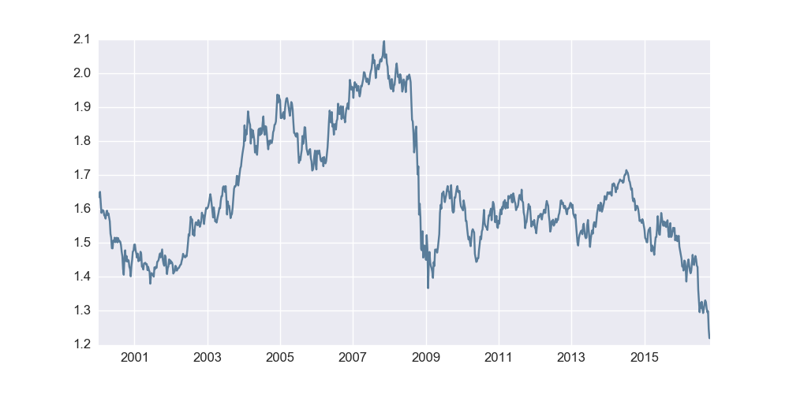First, take a look at the global financial crisis, and event that preciptated a drastic change in the UK-US exchange rate
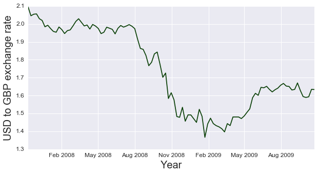Next, take a look at the at the time period around the Brexit referendum, which saw the value of the GBP at a local minimum relative to a 25 year time horizon
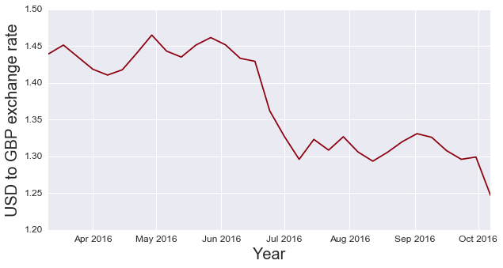Stationarity
An important assumption in much of models underlying time series analysis is that the mean and variance of the data data do not change over time; if the data has an underlying trend, this will certainly not be true. As such, most time series analysis occurs on data rendered stationary, traditionally by taking first differences. After differencing, we see that aside from a time of extreme variation around the global financial crisis, data is reasonably stationary with mean zero and relatively stable variance outside of the 2008-2010 time frame. Keeping the anomalies of the financial crisis in mind, we can move on to the next segment in building our model.
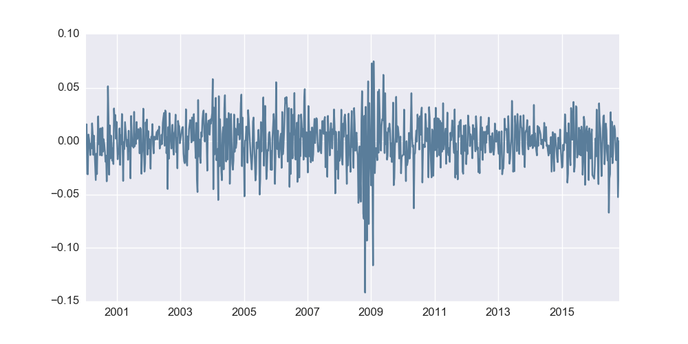Autocorrelation
Let's first start by taking a deeper dive into the first lag of the first-differenced exchange rate as this should give us some information as to whether or not a simple AR(1) process can adequately model our data. If we see a non-zero slope to the correlation plot, we can infer that there is, in fact, a good relationship between this week's exchange rate and last week's exchange rate.
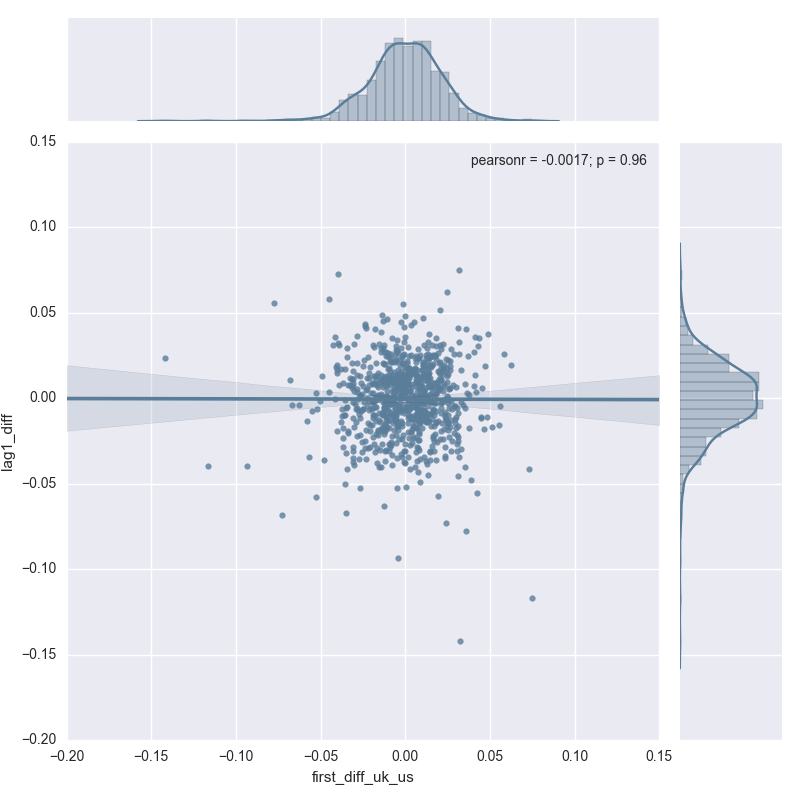The first difference is almost certainly zero, with both axes having data appearing to be drawn from a roughly normal distribution with mean zero. There does not appear to be much gleaned from relying entirely on the first lag.
Let's now take a look at further lags (lags 2 through 40) to see if there's any other information thats's available in prior lags.
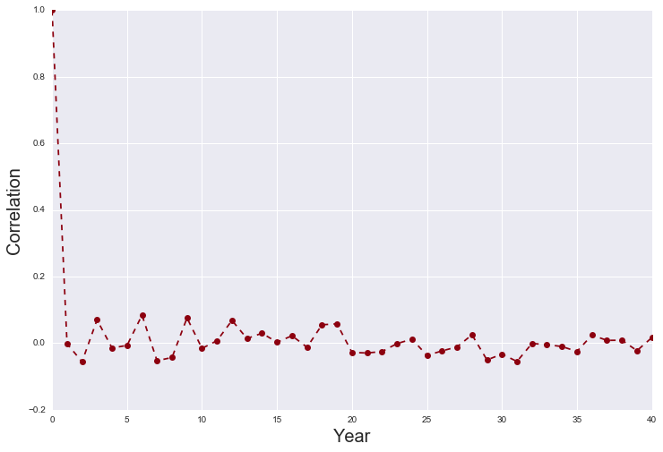The lags appear to bounce around zero--an AR process might not be able to glean all that much from the underlying data, although regularization might improve this, which we will discuss in a later segment.
Univariate ARMA models
Although we saw from the autocorrelation plot investigation above that AR processes will likely perform trivially, there's still a need to create a well-developed baseline model against which we will compare our sentiment score-augmented model.
ARIMA models are set of time series methods that include autoregressive components (AR), differencing (I), and moving average terms (MA) in order to capture various dimensions by which time series trends can be described.
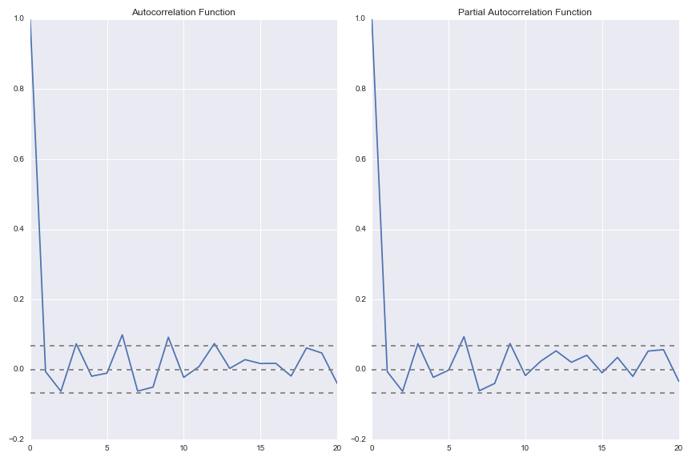AR model
As mentioned earlier, AR terms capture the number of lags to be used by the model. Here, we select an AR(6) process as the sixth lag is somewhat significant in both the ACF and PACF plots above. The AR(6) process appears to perform quite well (although we should remember that exchange rates do not vary all too much week over week).
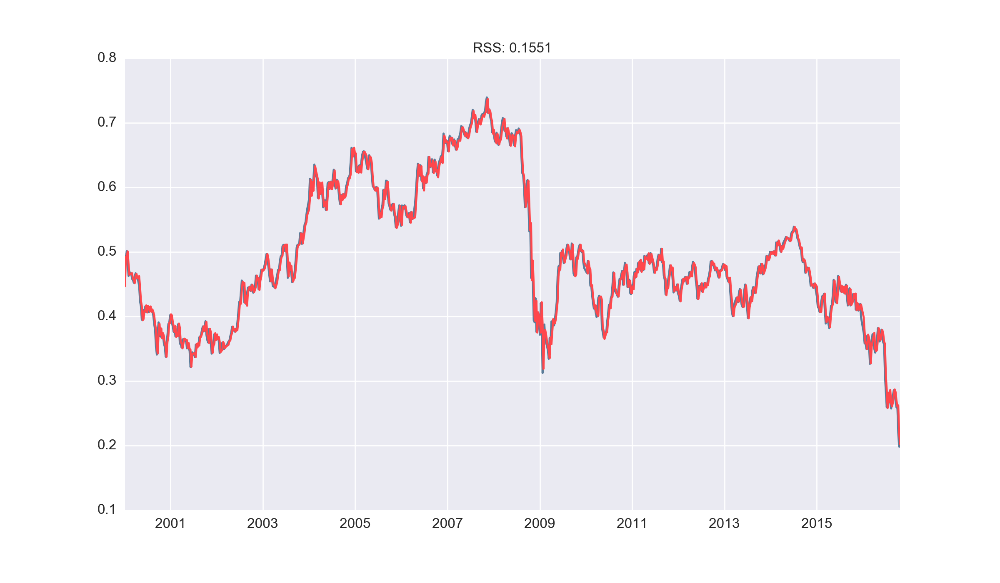MA model
We also considered a standalone moving average model (using two moving average terms) for the sake of exploration. This appeared to attenuate the magnitude of our predictions and lead to a poor model result.
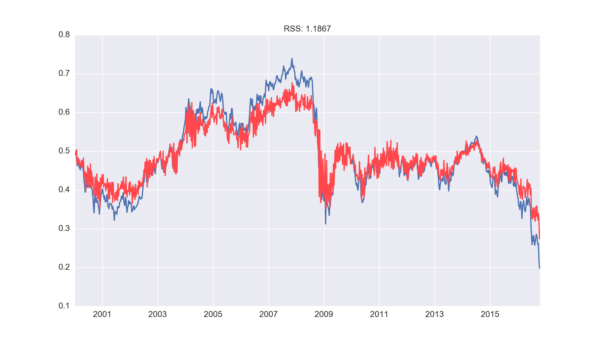ARMA model
Our final baseline model was an combined ARMA (6,5) process that yielded the lowest SSR on the data, with a plot of the prediction overlayed on the original data below.
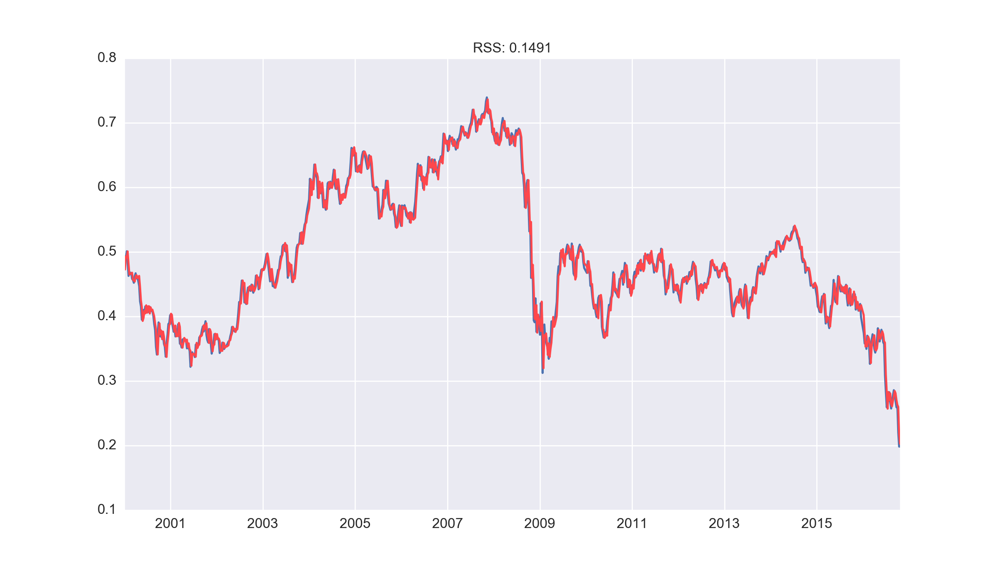Lasso regression model
An alternative time series modelling approach was considered involving using linear regression techniques. Matrices of predictors were generated with the lagged exchange rate data and this was used with Lasso regression to determine the coefficients of the lags. The data was of the form:
1. Create a matrix of lagged predictors
For further improvements from the baseline model, several other models were considered including regression models with L1 and L2 regularisation. This is equivalent to an autoregressive model and would enable us to examine the coefficients assigned to each lag.

To determine the number of lags used in our model, we split the given data into training and test sets and analysed the cross validation scores. This is gave 20 lags as being the optimal choice, as shown in the matrix above.
2. Split into test and train sets and analyse model forecasts
3. Use lasso regression to fit a model to the training data
Having chosen the number of lags, we now fit a lasso regression model on the training data. We choose to use the lasso because it would give sparse coefficients in our prediction lag variables, so that potential interpretations can be made after the fit. Cross validated Lasso regression was used to optimise the hyperparameters.
4a. Visualising the predictions on the test set
We first visualise the predictions from the lasso model on the test set, to obtain a sense of the overall fit compared to the actual data

As visualised above, our predictions are close to the actual exchange rates on the test set
4b. The regression coefficients of the fitted mode
We can analyse which of the time lags are the most significant in our model, by considering the fitted regression coefficients
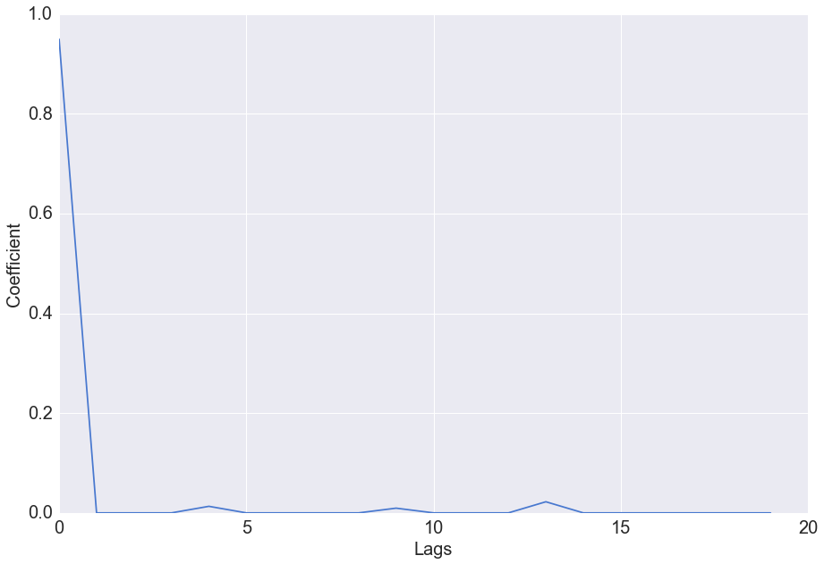Visualisation of the coefficient values shows that beyond the first lag, the subsequent lags have little predictive value. Lasso regression squashes the predictive power of some coefficients in favour of others, and in this case has put all the predictive power in the first lag.
4c. Residual errors of the model
We can analyse the distribution of the residual errors of the model
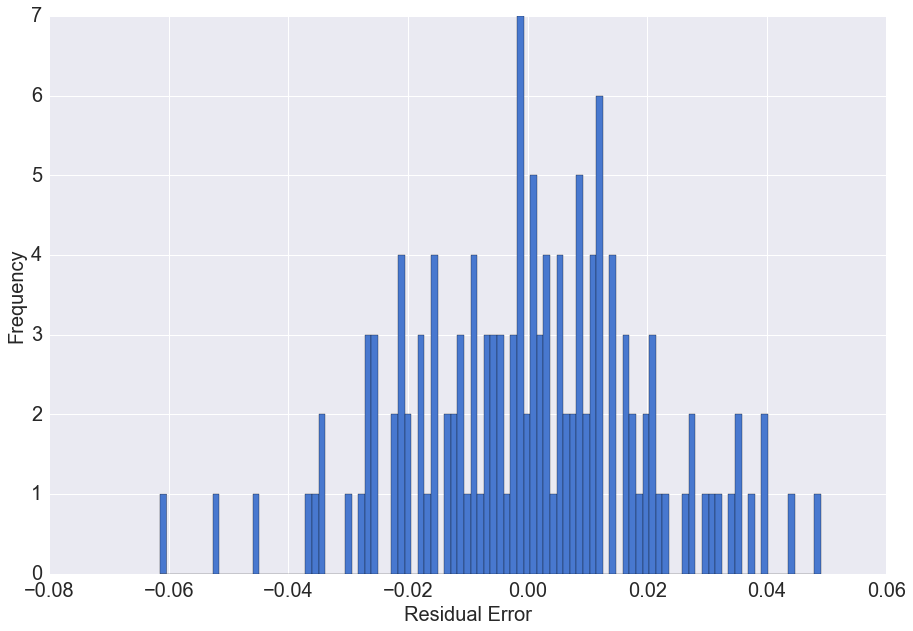The residual errors have a distribution with mean approximately zero. This means on average our prediction model does not under or overestimate the actual values.
Multivariate Lasso regression
A predictor matrix of containing 20 lags of preceeding exchange rate, 20 lags of preceding positive sentiment scores, and 20 lags of preceding negative sentiment scores was constructed of the form

As highlighted above, the first 20 columns of the matrix correspond to the exchange rate time series, the next 20 columns of the matrix correspond to the positive sentiment scores, and the last 20 columns of the matrix correspond to the negative sentiment scores.
Again we can analyse which of the time lags and the positive/ negative sentiment lags are the most significant in our model, by considering the fitted regression coefficients
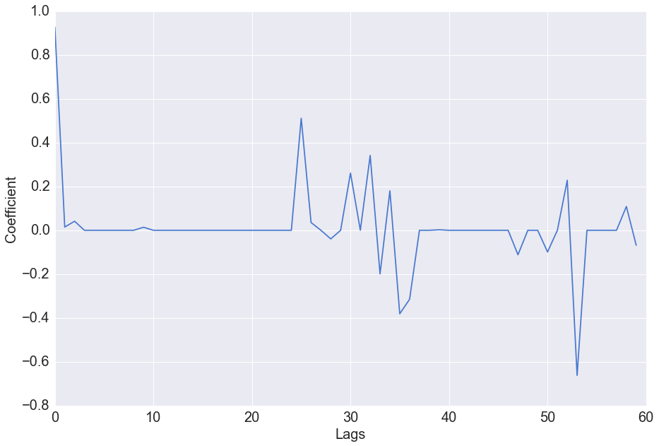Residual errors of the model
We can again analyse the distribution of the residual errors of the model
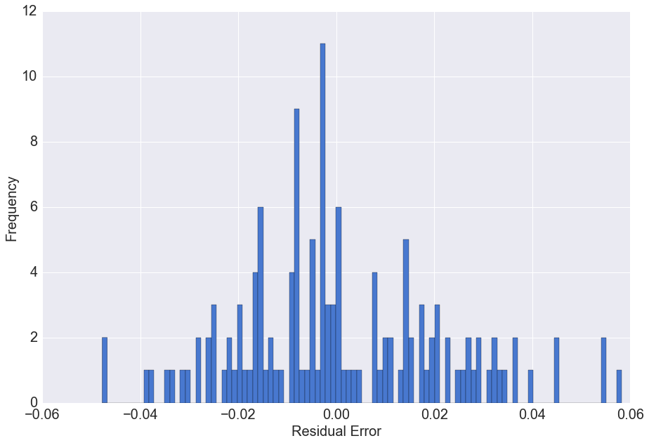The residual errors have a distribution with mean approximately zero. This means on average our prediction model does not under or overestimate the actual values.
Model Comparison
Finally, we consider the R^2 values of the different models considered for comparison with our final foreact model which incorporated the sentiment scores.
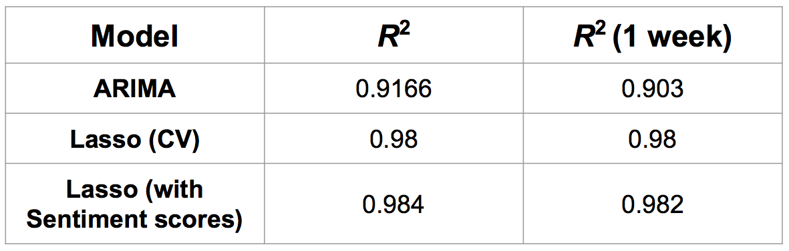There is little increase in the predictive accuracy of the model with the incorporation of sentiment scores, showing that a baseline univariate model is in fact equally as useful as a more complex model with a larger predictor space
Forecasting
The time series lasso model alongside the sentiment scores were used to generate forecasts of the exchange rate for different forecast horizons
Forecast Methodology
Exchange rate forecasts were generated in an incremental process:
1. The lags of time step t were used to generate a prediction for time step t+1
2. This was used as the best estimate of the exchange rate at time t+1 and used as one of the predictors to predict the value of the exchange rate at time t+2
This incremental forecasting process was continued up to the desired forecasting horizon. It is important to note that at each forecasting step, the error increases significantly and the confidence bounds after even 2 time steps forecasts are large. The plot below shows 20 week forecasts generated from each time point. The forecasts are shown as the coloured lines.
The forecasts are seen to have very little predictive accuracy beyond predicting 1-2 weeks in the future. This result is unsurprising. Given the inherent unpredictable nature of exchange rates and their sensitivity to changes in the world, it would be unrealistic to expect that the exchange rate could be forecasted several weeks or months into the future. Looking more closely at the direction of prediction, during the sharp fall in exchange rates during the financial crisis (late 2008), the predictions are in the positive direction, and it takes several months before the direction of prediction aligns with the local direction of movement. Following the financial crisis, the predictions all show the value decreasing from the value at the local time point. This analysis shows that long horizon forecasts of the exchange rate are difficult and most probably inaccurate.
Conclusions
Future Work
- Differencing the exchange rate time series data in forming the predictor matrix
- Adding differenced sentiment scores
- Elastic net regularisation
- Vector autoregressive models
- Investigate more sophisticated models such as AFIRMA which are commonly used for forecasting high frequency time series data
- Incorporate sentiment scores from a wider range of news sources outside the Guardian
- Investigate more sophisticated natural language processing techniques such as Word2Vec or Doc2Vec which can consider articles at a sentence level rather than a word level
References
- SENTIWORDNET: A Publicly Available Lexical Resource for Opinion Mining. Andrea Esuli and Fabrizio Sebastian
- Time Series: Economic Forecasting. James Stock
- Exchange rate modelling using news articles and economic data. D. Zhang, S.J. Simoff and J. Debenham
- Sentiment analysis based on clustering: a framework in improving accuracy and recognizing neutral opinions. Gang Li and Fei Liu
Our Amazing Team
Nikhila Ravi
Engineering and Applied Sciences
Cirrus Foroughi
Harvard Business School
Niloy Biswas
Statistics